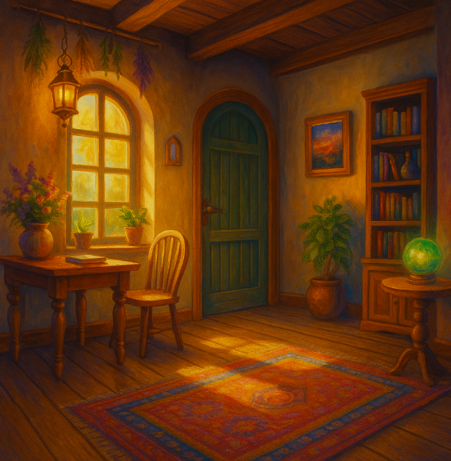

Mouse and Bat raced out of the kitchen, the spellbook snapping shut behind them.
They didn’t stop running until the shimmer near the back door opened again, a silent invitation home. Without looking back, they dove through.
The familiar comfort of their cottage wrapped around them, warm and safe. The scent of real herbs, not twisted magic ones, filled their noses.
In adventures, sometimes the bravest choice is knowing when to step away and when to race back toward the light.
🏡 Return to Home Page